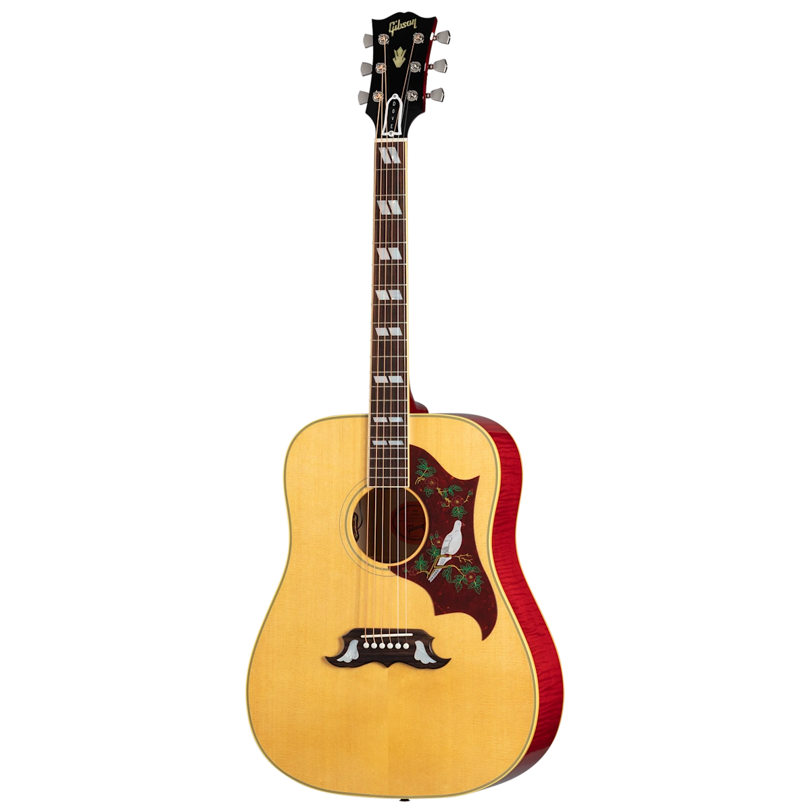
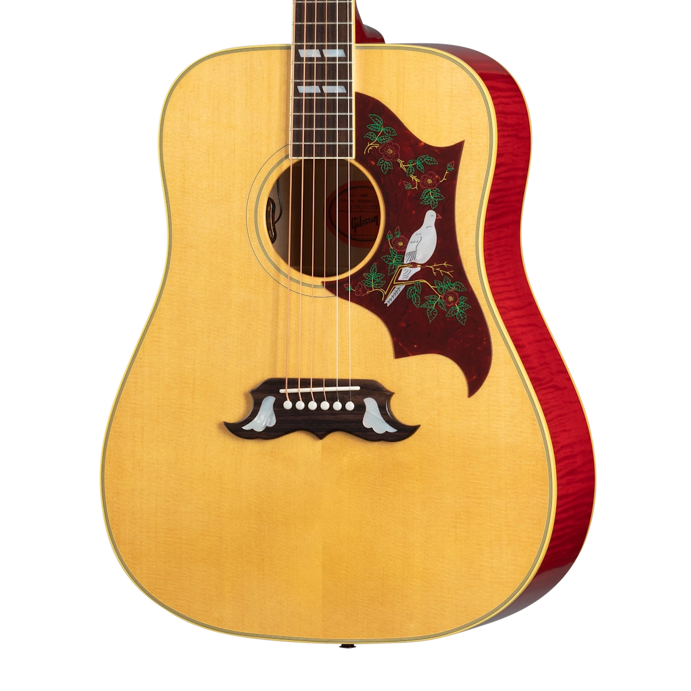
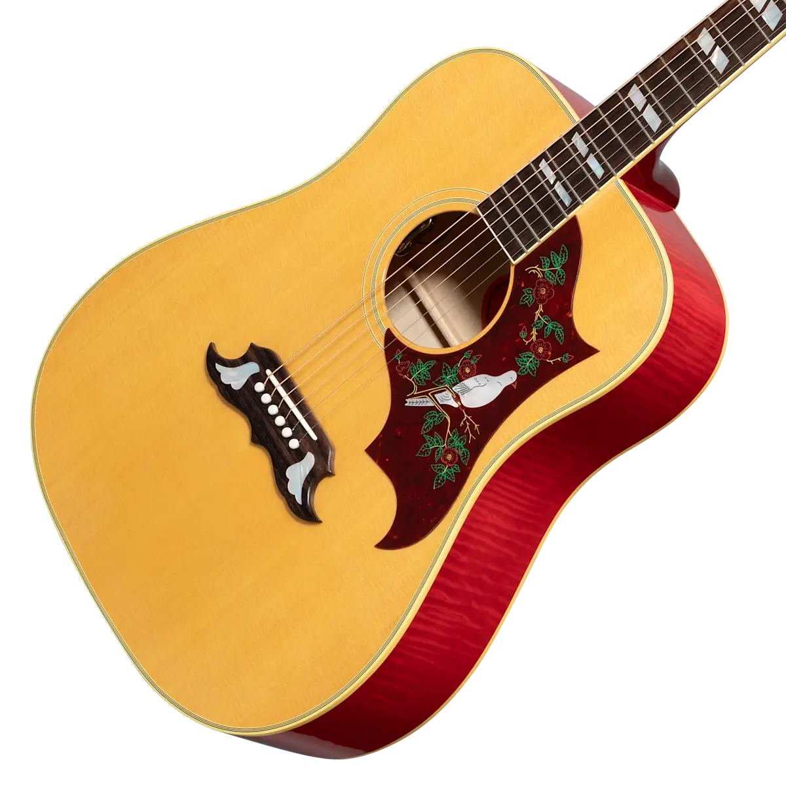
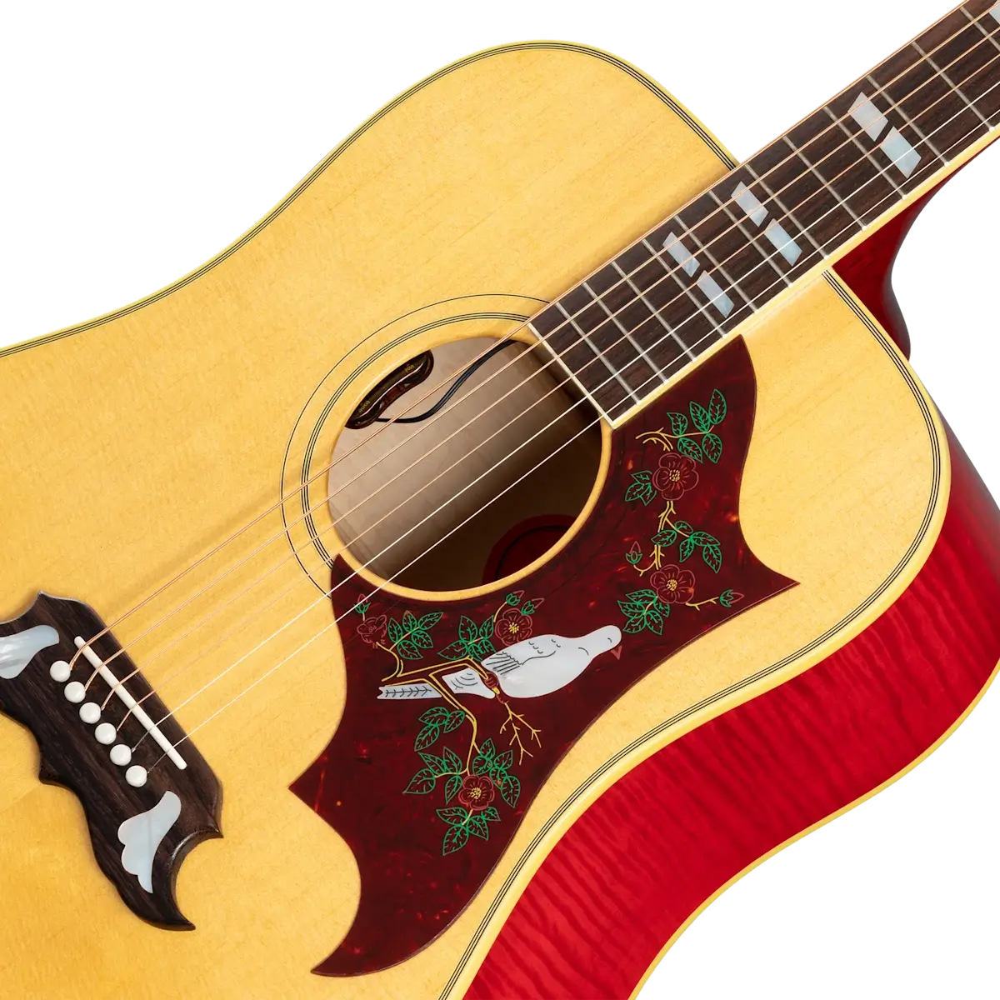
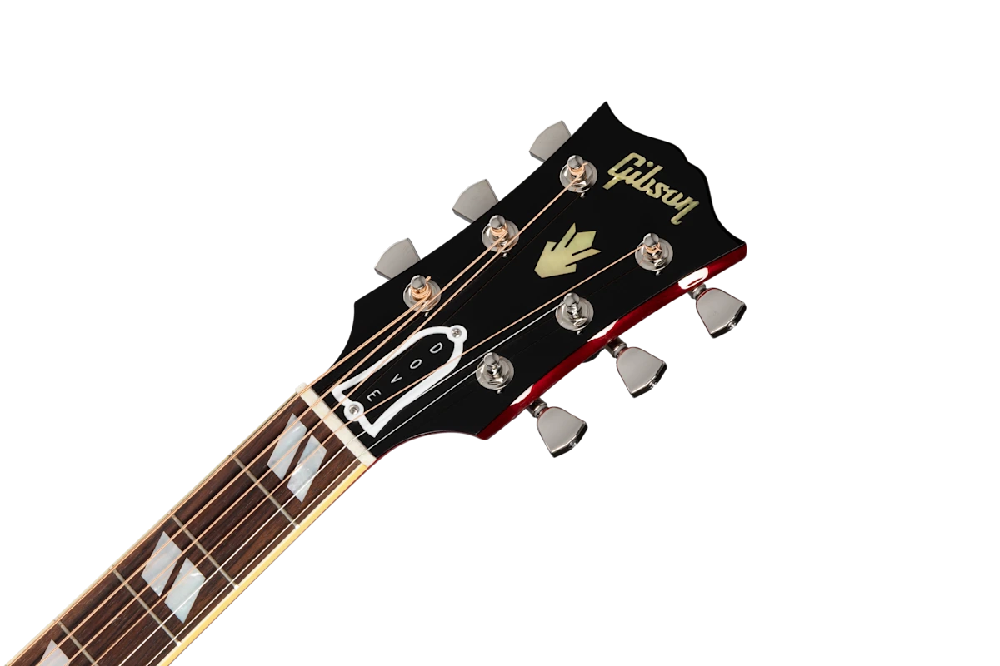
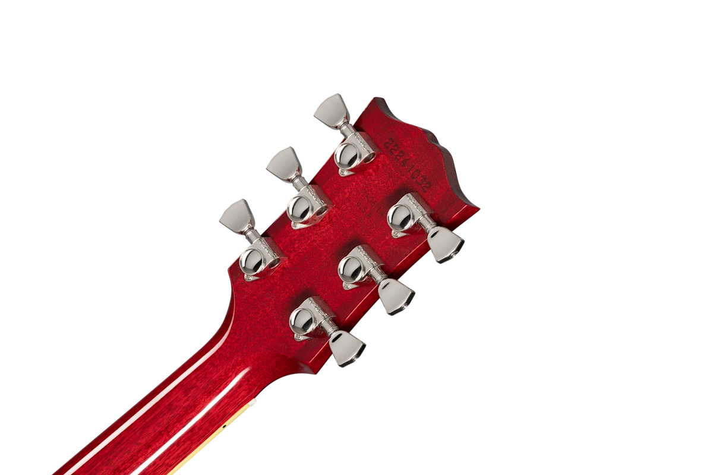
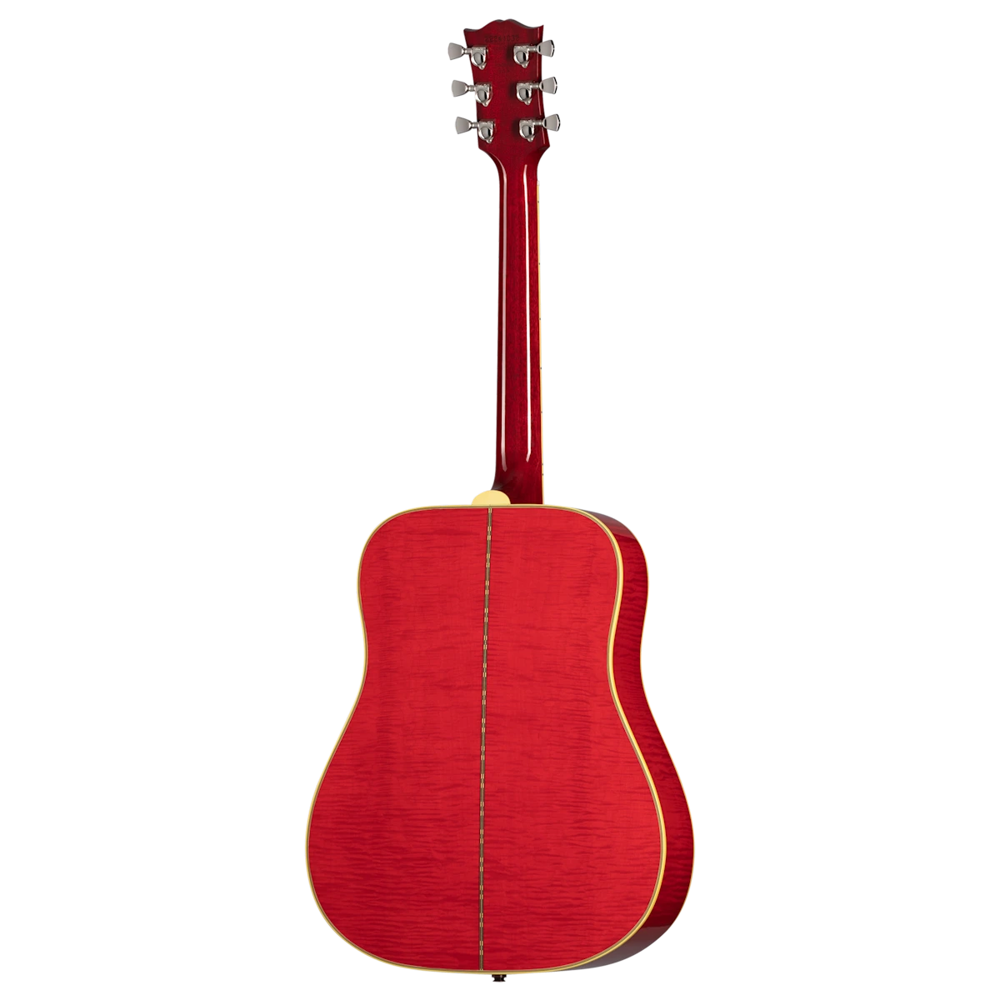
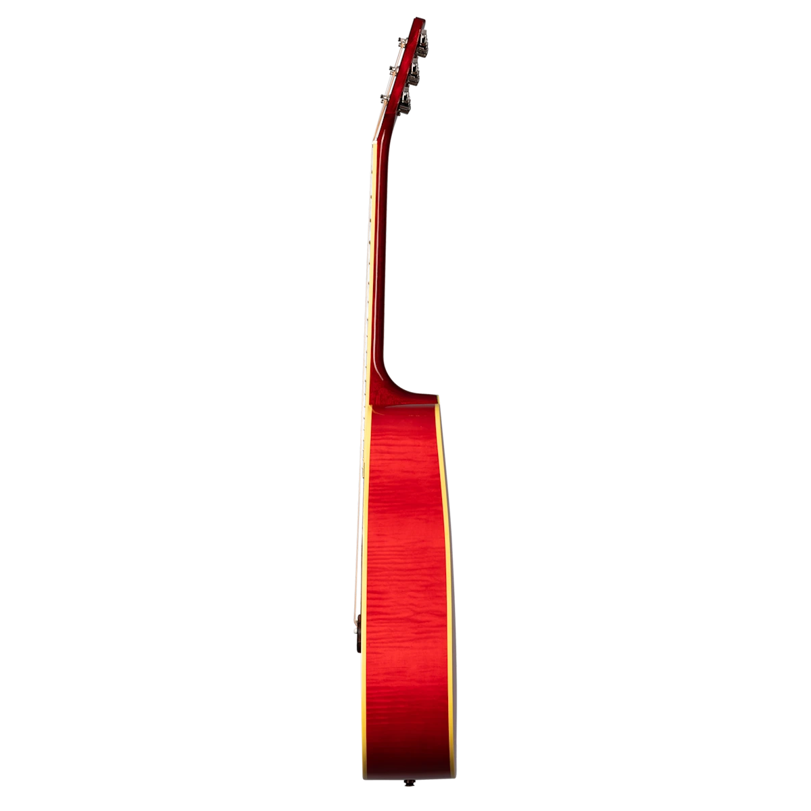

Gibson Dove








The Gibson Dove: A legendary square-shoulder acoustic, born in the heart of the '60s music revolution. Its flame maple back and sides deliver a crisp, powerful tone, balanced by the warmth of its square-shoulder design. Classic Dove appointments include a bone nut and saddle, vintage binding, Grover Keystone tuners, and the iconic Dove pickguard with its hand-engraved mother-of-pearl inlay